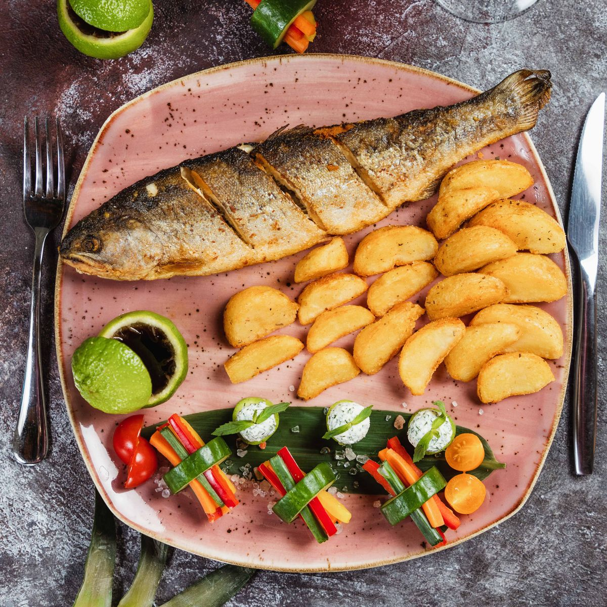

Cardápio
Os pratos principais servem bem uma pessoa. Os marcados com (serve 2) dão para dividir.
Entradas
-
Ostras in natura (dúzia) R$ 48,00
Do cultivo aqui da baía, abertas na hora e servidas com limão.
-
Ostras gratinadas (dúzia) R$ 62,00
Com molho branco e queijo, gratinadas na brasa.
-
Berbigão ao bafo R$ 42,00
Cozido no vapor com cebola e cheiro-verde. Vem com pão torrado.
-
Pastel de berbigão R$ 34,00
Porção com oito pastéis pequenos de massa fininha.
-
Casquinha de siri R$ 26,00
Carne de siri refogada, servida na casca com farofa por cima.
Pratos principais

Sugestão da semana
Peixe do dia na brasa
Peixe do dia inteiro na brasa, com batatas, arroz e pirão.
R$ 118,00 R$ 96,00
-
Sequência de camarão (serve 2) R$ 178,00
Camarão ao bafo, à milanesa e alho e óleo, casquinha de siri, filé de peixe, arroz, pirão e salada.
-
Camarão ensopado R$ 74,00
No molho de tomate com cheiro-verde, servido com arroz, pirão e farofa.
-
Tainha escalada R$ 64,00
Só na temporada, de maio a julho. Assada na brasa, com arroz e pirão d'água.
-
Filé de peixe ao molho de camarão R$ 69,00
Peixe do dia grelhado, com molho de camarão, arroz e batata cozida.
-
Berbigão ensopado R$ 52,00
Receita da Dona Lurdes, com arroz branco e pirão do próprio caldo.
Sobremesas
-
Sagu de vinho com creme R$ 18,00
Bolinhas de sagu cozidas no vinho tinto, com creme de baunilha por cima.
-
Arroz-doce R$ 16,00
Com casca de limão e canela, receita da avó da Dona Lurdes.
-
Bijajica R$ 14,00
Biscoito do litoral catarinense, de massa de mandioca, amendoim e açúcar mascavo. Três unidades.
Bebidas
| Bebida | Copo (300 ml) | Jarra (1 litro) |
|---|---|---|
| Suco de maracujá | R$ 10,00 | R$ 26,00 |
| Suco de butiá | R$ 11,00 | R$ 28,00 |
| Abacaxi com hortelã | R$ 10,00 | R$ 26,00 |
| Limonada | R$ 9,00 | R$ 24,00 |
| Refrigerante (lata) | R$ 7,00 | - |
| Água mineral | R$ 5,00 | - |
Os sucos são feitos com a fruta, sem açúcar. Se quiser adoçado, é só pedir.